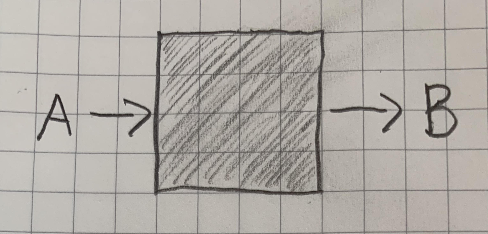
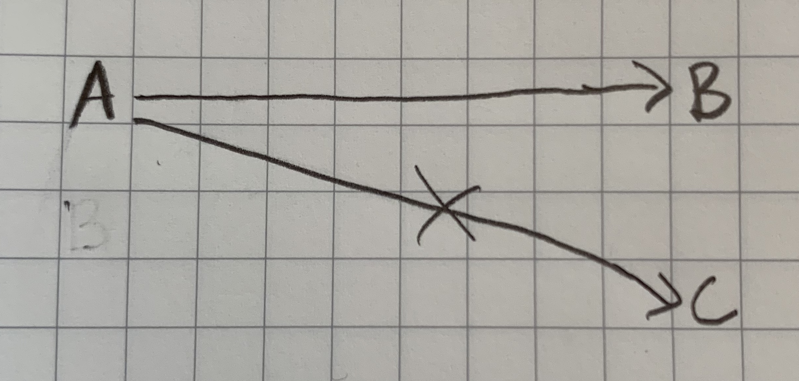
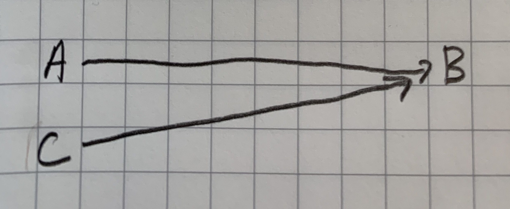
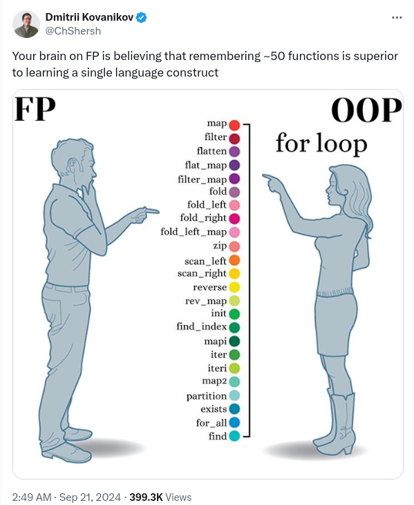

What The Functional Programming
James Ward - Developer Advocate @ AWS
“If you can use math to do something, you should”
Philip Wadler
Pure Function
-
Takes inputs and return outputs

-
Consistent mapping from inputs to outputs


Functors, Foldables, Etc

Make Illegal States Unrepresentable